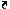

| User guide | |

When a uiextras.BoxPanel has its "DockFcn"
filled in, a dock/undock button ( / ) is shown in the upper-right of the
title-bar. When the user clicks this button the specified function
is called. Since re-docking the panel into its previous parent
depends on the type of parent, it is up to the user to write
some code to actually extract or insert the panel.
The following simple example shows how to add dock/undock functionality to a box full of panels. Save the code into a file called "dockexample.m" to run it.
(The code for this example can be found here: [ view | edit | run ] )
Open a new figure window and add three panels.
functiondockexample()% Create the window and main layoutf =figure( 'Name', 'Dockable GUI example', ...' 'NumberTitle', 'off', ... 'Toolbar', 'none', ... 'MenuBar', 'none' ); b =uiextras.HBox( 'Parent', f );% Add three panels to the boxp{1} =uiextras.BoxPanel( 'Title', 'Panel 1', 'Parent', b ); p{2} =uiextras.BoxPanel( 'Title', 'Panel 2', 'Parent', b ); p{3} =uiextras.BoxPanel( 'Title', 'Panel 3', 'Parent', b );% Add some contentsuicontrol( 'Style', 'PushButton', 'String', 'Button 1', 'Parent', p{1} );uicontrol( 'Style', 'PushButton', 'String', 'Button 2', 'Parent', p{2} );uicontrol( 'Style', 'PushButton', 'String', 'Button 3', 'Parent', p{3} );
We set each panel to call the same dock/undock function. This function is nested inside the main function so that it has access to the main function's variables. A better way to do this is to make the main function into a class, but this nested-function approach is fine for simple applications.
Note that as soon as we set the "DockFcn" property the Dock/Undock icon appears in the top-right of each panel.
% Set the dock/undock callbackset( p{1}, 'DockFcn', {@nDock, 1} );set( p{2}, 'DockFcn', {@nDock, 2} );set( p{3}, 'DockFcn', {@nDock, 3} );%-------------------------------------------------------------------------%functionnDock( src, evt, whichpanel )% Set the flagp{whichpanel}.IsDocked = ~p{whichpanel}.IsDocked; if p{whichpanel}.IsDocked% Put it back into the layoutnewfig =get( p{whichpanel}, 'Parent' );set( p{whichpanel}, 'Parent', b );delete( newfig ); else% Take it out of the layoutpos =getpixelposition( p{whichpanel} ); newfig =figure( ... 'Name',get( p{whichpanel}, 'Title' ), ... 'NumberTitle', 'off', ... 'MenuBar', 'none', ... 'Toolbar', 'none', ... 'CloseRequestFcn', {@nDock, whichpanel} ); figpos =get( newfig, 'Position' );set( newfig, 'Position', [figpos(1,1:2), pos(1,3:4)] );set( p{whichpanel}, 'Parent', newfig, ... 'Units', 'Normalized', ... 'Position', [0 0 1 1] ); end end% nDockend% Main function
Undocking the middle panel causes the other two to fill the vacated space. The undocked panel appears in its own window, with the "Undock" icon replaced by a "Dock" icon.
Re-docking the panel would cause it to be appended to the right of the list in the original window.
| Minimize and maximize | [Top] | A complete example | |